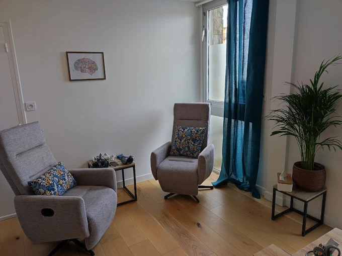

Clarifier
Formuler un objectif concret, réaliste et observable.
PNL
La PNL propose des outils concrets pour clarifier un objectif, observer les stratégies personnelles, mobiliser des ressources et expérimenter de nouvelles manières d'agir.
La séance peut explorer les pensées, les émotions, les images mentales, le langage intérieur et les comportements associés à une situation. L'objectif est de créer des repères plus utiles et plus ajustés.
La PNL peut être utilisée seule ou en complément de l'hypnose, selon la demande et le rythme de la personne.

Objectifs possibles
Formuler un objectif concret, réaliste et observable.
Repérer les déclencheurs, les habitudes et les stratégies internes.
Réactiver des ressources déjà vécues ou construire de nouveaux appuis.
Tester progressivement des réponses plus adaptées au quotidien.